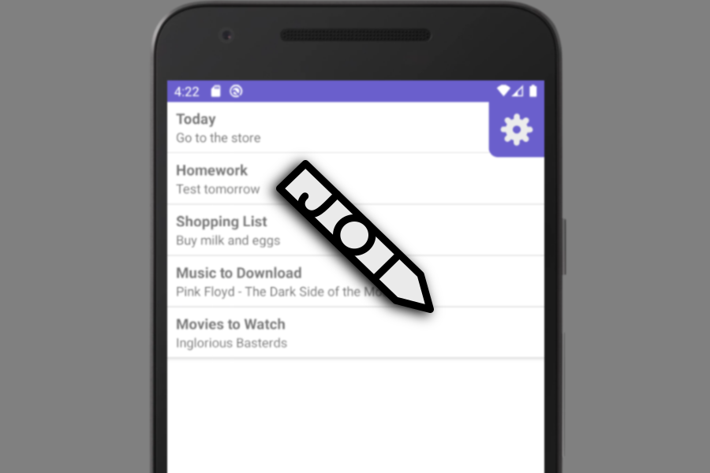
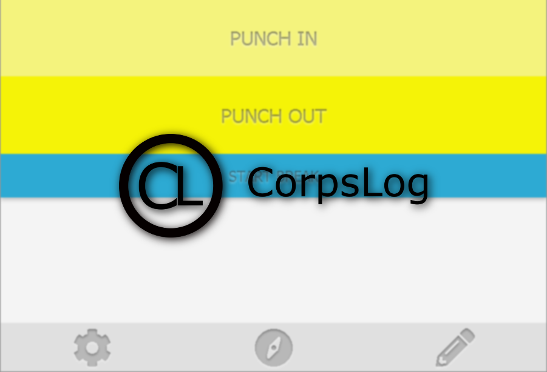
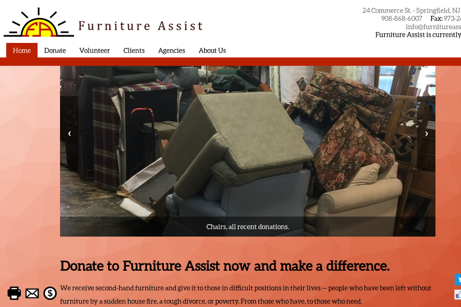
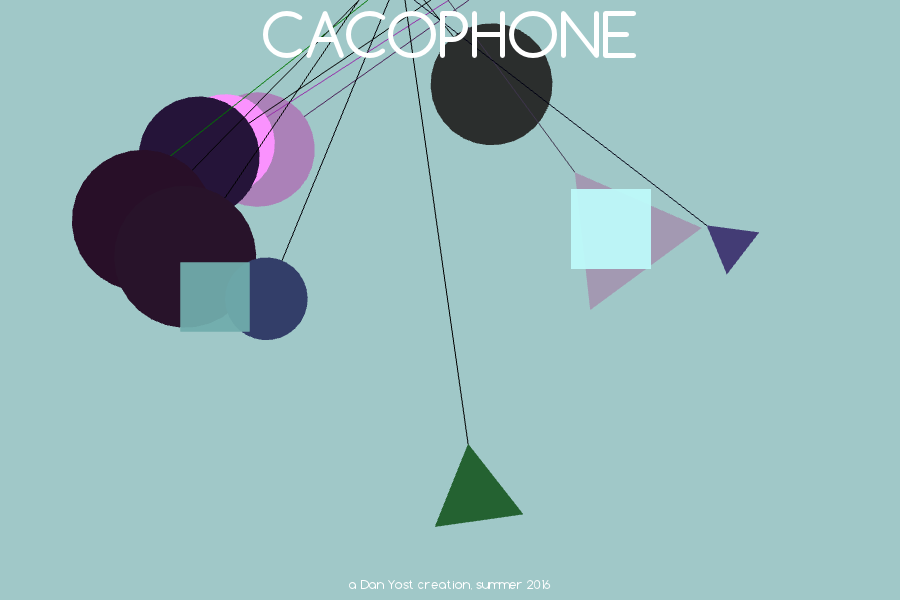

A self-motivated maker, designer, and programmer who specializes in designing secure, high-performance libraries and applications that work across multiple platforms.
Projects




Experience
Software Development Co-Op
Safe Flight Instrument Corporation
Worked directly with ARM microcontrollers in the low-level, high-performance main control systems of various aircraft.
Designed a direct memory access system to minimize CPU load and maximize data transfer speeds.
Consistently met deadlines for code reviews with positive feedback.
June 2020 - August 2020
Desktop Technician
Marist College Client Technologies
Implemented and maintained software solutions as part of a team serving approximately six thousand active students and staff.
Provided a consistently positive customer service experience while maintaining rigorous documentation.
Through the constructive challenges provided by this position, I enhanced my overall efficiency and attention to detail.
May 2019 - October 2019
Poll Interviewer
Marist Institute for Public Opinion
Surveyed the national population on politics, science, and consumer behavior.
Consistently achieved call volume goals and positive ratings.
Gained positive insights from over one hundred callers from across the United States.
January 2019 - May 2019
Marketing Intern
Advantage Marketing Consulting Services
Built WordPress sites, wrote dozens of blog posts, and created email newsletters.
Wrote and edited website code for high priority clients including cybersecurity and accounting firms.
Provided sales and marketing support and represented the company at several trade shows.
January 2014 - December 2018
Student Technology Intern
Union County Vocational-Technical Schools
Resolved technical problems for students and staff across the UCVTS campus.
Worked with thousands of PCs, Chromebooks, and Apple computers over one summer and academic year.
June 2016 - June 2017
Education
Marist College, Poughkeepsie, NY
Bachelor of Science
Major: Computer Science
Minor: Cognitive Science
GPA: 3.8
August 2018 - May 2022
Volunteering
AmeriCorps Project Lead
SBP - Columbia, SC
Worked with a national team to remediate, frame, drywall, and trim six houses that were made uninhabitable by flood damage.
Safely instructed over five hundred volunteers through all phases of the construction process, with positive reviews from all.
January 2018 - June 2018
Website Designer
Furniture Assist - Kenilworth, NJ
Fully re-designed the Furniture Assist website using PHP, MySQL, HTML, CSS, and Javascript.
The updated site enhanced the productivity of this non-profit organization.
July 2017 - September 2017
Skills
Other Environments & Languages
C/C++
Lua
jQuery
zOS
OpenGL 3
GNU Compilers
Awards
Marist College Presidential Scholarship
Segal AmeriCorps Education Award
Marist College Dean's List, Multiple Years
Space Crusade is a small arcade-style shooter in which you defend against an onslaught of alien spaceships using your lasers and missiles. Aim your ship with the mouse and move using WASD. Left click to shoot lasers, and right click to shoot missiles. Navigate menus with the mouse. Created in the Summer of 2014. Learn More.
Cacophone is a game about making music using swinging pendulums. There are multiple types of pendulum, accessible with the mouse wheel, and stationary blocks which add an additional layer of fun. It also features a flexible settings menu. Created in the summer of 2016. Learn More.
CorpsLog is a flexible, cross-platform timesheet app designed to work with the OnCorps Reports timesheet tracking service. It improves the accuracy of worker's submitted data with the help of location tracking, notification reminders to punch in and punch out, and automatic submission of hours to the OnCorps website. Completed in June, 2018. Learn More.
In the late summer of 2017, I fully redesigned the website of the non-profit Furniture Assist from scratch. While not all of the changes seen here were implemented, the full-featured website demonstrates my competence in PHP, HTML and JavaScript. Learn More.
Jot is a simple, minimalist, ad-free list-tracking application. It's used to keep track of daily tasks in a straightforward, aesthetically-pleasing way. Some features include gesture controls, automatic backups, and an ergonomic layout. Still a work-in-progress, started in August 2019. Learn More.